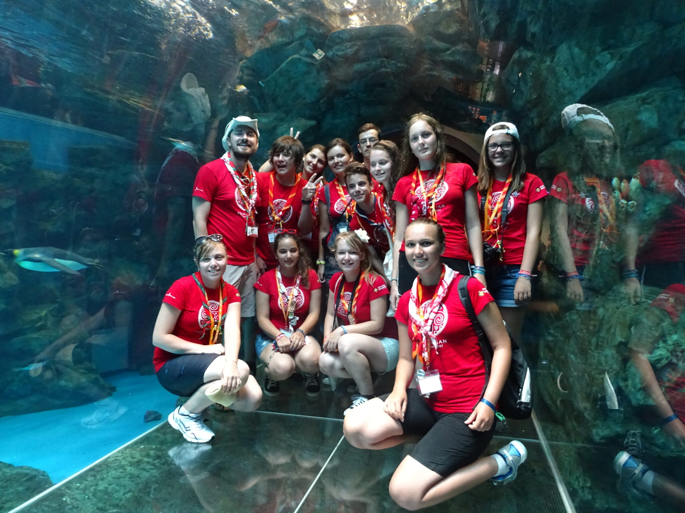

Poveștile verii: Jamboreea Mondială!

Plini de energie și emoție. Așa au plecat cercetaşii din „Operațiunea Kirara” de pe aeroportul Otopeni. 13 ore de zbor nu au reprezentat o problemă, știind că în momentul aterizării în Osaka aventura avea să înceapă.
Prima zi a fost pentru acomodare şi construcții de camp. Nu a fost greu să ne dăm seama că aveau să urmeze 2 săptămâni pline de cercetășie, de cunoaștere şi în special aveam să simțim alături de cei 34.000 de mii de participanți ce înseamnă „Spiritul Unității”.
În seara de 29 iulie, Ceremonia Deschiderii a început cu un spectacol la înălțime susținut de Forțele Aeriene Japoneze. Sute de cercetași au purtat uniformele sau costumele tradiționale în timpul paradei în care steagurile a 150 de țări și-au anunțat prezența la a 23-a Jamboree Mondială. Cabana Scout a avut onorea de a trimite pe scena 2 dintre membrii, astfel Ana a fost cea care a purtat steagul Romaniei în timpul festivității, iar Vlad a făcut parte dintre cei care și-au reînnoit promisiunea în numele tuturor cercetaşilor prezenţi.
Au urmat: ziua dedicată culturii, ziua comunității, ziua dedicată păcii, ziua mâncărurilor internaționale, ziua activităţilor cu apă, ziua în care am învățat cum putem face mici schimbări în jurul nostru, ziua dedicată științei şi, pentru că un cercetaș își petrece majoritatea timpului în natură, ultima zi a fost dedicată acestui lucru.
Activitatea care a avut un impact major asupra noastră a fost vizita la Hiroshima, la muzeul care păstrează atâtea fragmente dureroase din ziua de 6 August 1945. Am aflat despre povestea de viață a unei fetiţe de numai 12 ani, Sudako, în memoria căreia, în mijlocul parcului păci din Hiroshima, a fost construit un monument.
Hiroshima nu este deloc cum vedem prin cărți sau filme. Chiar dacă orasul este plin de tehnologie și clădiri moderne, unele construcții au rămas neatinse încă din 1945. Mesajul transmis nu a fost unul de disperare sau teamă, ci de speranță şi pace, iar ca cercetași pacea și unitatea ar trebui deja să se regăsească în noi.
Experiența Jamboreei ne oferă tuturor șansa de a vedea cât de diferiți suntem. Ca participant, ai oportunitatea de a lua parte la activităţile de cultură, unde ai impresia că faci înconjurul lumii în doar 15 minute. Avem atâtea lucruri care diferă de la țară la țară – mâncarea, muzica, hainele, religia; ce știm sigur că avem în comun este pasiunea pentru cercetășie.
4 membri, o mulțime de amintiri și o experientă unică și diferită pentru fiecare. Aceasta a fost Cabana Scout la Jamboreea Mondială.
material realizat de Ana Vătau